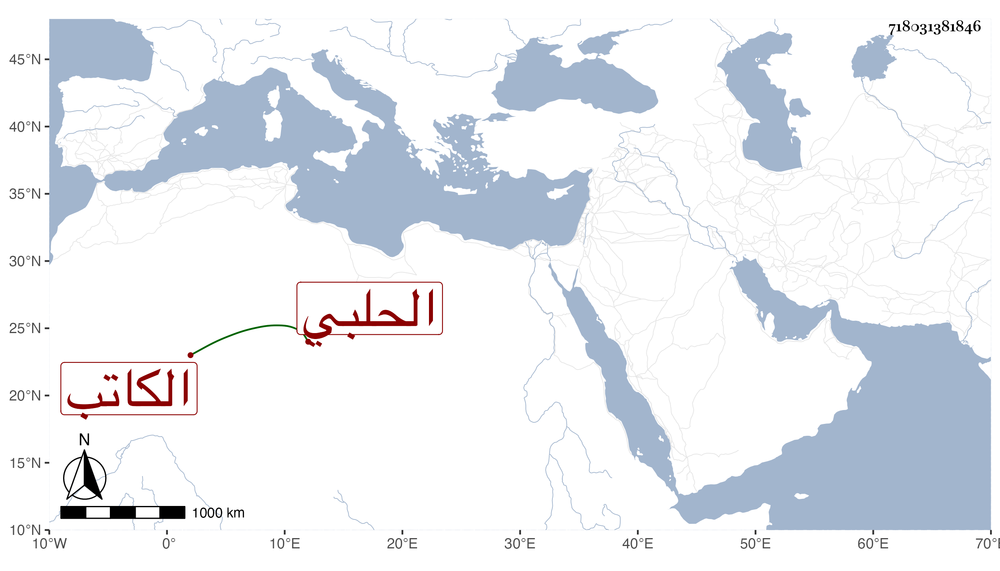

0902Sakhawi.DawLamic.ITO20230111-ara1.EIS1600.718031381846
Biography ID: 718031381846
526
محب الدين بن الأمين الحلبي الكاتب هو محمد المدعو عبد الرحمن بن الحسن بن حمزة بن يوسف مضى . وابن أبي حامد بن ظهيرة في محمد بن محمد بن محمد بن محمد بن حسين وابن ظهيرة اثنان كل منهما اسمه أحمد فأولهما ابن الجمال محمد بن عبد الله بن ظهيرة والمتأخر ابن أبي السعادات محمد بن محمد بن محمد بن حسين ولهما ثالث أحمد بن عبد الحي بن أبي بكر قاضي جدة وابن القاضي عز الدين النويري المكي أحمد بن محمد بن أحمد بن محمد بن أحمد وابن العفيف قريب لقوالح بن العفيف كان أحد الأطباء بل يباشر رياسة الكحل في وقت مات في ذي الحجة سنة ثمان وسبعين وزعم كل من نقيب الجيش وقوالح أنه عصبته وابن نصر الله البغدادي في الاحمدين والتروجي عبد الغني بن اسمعيل والدموهي القاضي هو محمد بن أحمد بن محمد وسبط الزاهد أحد النواب محمد بن علي بن أحمد والطبري الإمام محمد بن محمد بن محمد بن أحمد بن الرضى إبرهيم والطوخي محمد بن أبي بكر بن محمد والنويري اثنان كل منهما أحمد أحدهما ابن أبي الفضل محمد بن محمد بن أحمد العقيلي والثاني ابن عمه ابن أبي القسم محمد بن محمد ابن أحمد بن محمد بن أحمد بن عبد العزيز .
